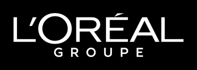
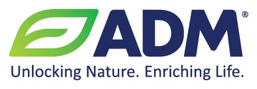
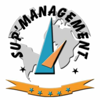

A propos de moi
// Après deux ans de cycle préparatoire à Sup'Management, j'ai obtenu mon diplôme d'ingénieur à l'ESAIP en gestion des risques et environnement, option risques industriels et naturels. Je me suis spécialisé dans la santé et la sécurité au travail.
Mes stages m'ont fait passer par l'agroalimentaire, l'électronique industrielle et la cosmétique : consignation des énergies dangereuses chez ADM, analyse environnementale chez Crouzet, qualité et sécurité des zones de pesée chez L'Oréal. Deux semestres Erasmus, à Liberec puis à Tolède, m'ont appris à travailler en anglais et en espagnol.
Depuis septembre 2026, je suis en alternance chez DANONE, dans l'équipe Global Health, Safety and Wellbeing. J'y accompagne le déploiement des initiatives sécurité du groupe, je coordonne les e-learning sécurité des sites dans le monde et je consolide les KPI sécurité dans Sphera.
Parcours
Expériences

Global Health, Safety and Wellbeing
DANONE · Alternance · Paris
- Appui au déploiement des initiatives sécurité du groupe : coordination avec les équipes locales, circulation de l'information et suivi de la mise en œuvre sur les sites.
- Déploiement et coordination des programmes e-learning sécurité sur les sites DANONE dans le monde ; contribution au plan mondial de formation sécurité et à son amélioration continue.
- Suivi, analyse et consolidation des KPI sécurité dans Sphera, pour le pilotage de la performance mondiale, le reporting et la conformité aux standards sécurité de DANONE.
- Contribution à l'animation de la Worldwide Safety Community : collaboration, partage de connaissances et diffusion des bonnes pratiques entre les équipes internationales.
- Gestion du système documentaire sécurité : exactitude, cohérence et accessibilité des documents et standards clés.

Ingénieur QEHS
L'Oréal · Stage · Paris
- Mise en place et suivi d'actions correctives sur les processus de pesée et la gestion de l'eau des utilités, selon les priorités techniques et budgétaires.
- Amélioration continue des zones de pesée : standardisation des processus ORP et optimisation des flux de travail.
- Audit et optimisation des protocoles de nettoyage des équipements, pour l'efficacité opérationnelle et la qualité.
- Animation de formations et promotion de la culture Qualité et Sécurité auprès des équipes de production.
- Rédaction de la documentation de validation pour l'installation des matières premières et des systèmes d'eau des utilités.
- Pilotage de la transition vers une fabrication plus naturelle et durable : réduction des conservateurs en garantissant la qualité produit et la conformité.

Ingénieur sécurité environnement
Crouzet · Stage · Valence
- Construction et mise à jour du cadre d'analyse des aspects environnementaux : identification, évaluation et priorisation des aspects environnementaux significatifs (AES).
- Évaluation des impacts sur l'air, l'eau, les sols, les déchets, la consommation d'énergie et le bruit, mise à jour au fil des évolutions opérationnelles et réglementaires.
- Suivi des plans d'actions liés aux AES et contribution à l'amélioration continue du système de management environnemental (SME).
- Prévention des risques HSE : audits de ligne, minutes sécurité, analyse des presqu'accidents et gestion des produits chimiques.
- Rédaction et mise à jour de la documentation HSE : procédures, modes opératoires, supports de sensibilisation et de formation, documents réglementaires.

Ingénieur risques industriels
ADM · Stage · Longué-Jumelles
- Mise en place des procédures de consignation (LOTO) pour les équipements électriques, mécaniques, pneumatiques, hydrauliques et thermiques, pour isoler en sécurité les énergies dangereuses.
- Mise à jour et standardisation de la documentation LOTO : sources d'énergie propres à chaque équipement et risques liés aux énergies résiduelles.
- Formation du personnel de production et de maintenance à la sécurité machine et à l'application des procédures LOTO.
Assistant de production
Elivia · CDD · Saint-Barthélemy-d'Anjou
Formation

Diplôme d'ingénieur, gestion des risques et environnement
ESAIP, École d'ingénieurs · Angers

Erasmus, sciences de l'environnement
Universidad de Castilla-La Mancha · Tolède, Espagne

Erasmus, génie mécanique
Technická univerzita v Liberci · République tchèque

Bachelor of Science, cycle préparatoire ingénieur
Sup'Management
Bénévolat

Répétiteur de mathématiques
Secours Catholique · Bénévolat · Angers
- Soutien scolaire individuel en mathématiques, avec un suivi adapté au rythme de chaque élève.
Compétences & Outils
Santé et sécurité au travail
- Évaluation des risques, DUERP
- Consignation et déconsignation (LOTO), sécurité machine
- Arbre des causes, analyse des presqu'accidents
- Gestion des produits chimiques
- Audits de ligne, minutes sécurité, ergonomie
Environnement
- Aspects environnementaux significatifs (AES)
- Système de management environnemental (SME)
- Installations classées (ICPE)
- Bilan carbone
- Cartographie SIG avec QGIS
Qualité et systèmes de management
- ISO 9001, 14001, 45001, 50001, 22716, 26000
- PDCA, AMDEC, 8D, 5M, 5S
- Qualification IQ / OQ / PQ
- Gestion documentaire, procédures et modes opératoires
Pilotage de la performance sécurité
- KPI sécurité : suivi, analyse, consolidation
- Reporting et conformité aux standards du groupe
- Plans d'actions correctives et suivi budgétaire
Formation et animation
- Programmes e-learning sécurité à l'échelle mondiale
- Animation d'une communauté sécurité internationale
- Formation et sensibilisation des équipes de production
Outils
- Sphera
- QGIS : géotraitement, mise en page
- Excel avancé : tableaux croisés, formules
- Pack Office